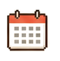

今日安排草案
8月29日 · 星期六
AI 负责建议，最终安排由你确认。
09:00
10:00
11:00
12:00
13:00
14:00
15:00
16:00
17:00
18:00
18:30
09:00–10:20
查收邮件与消息
拖动
锁定
调整时长
10:20–11:10
整理产品评审材料
拖动
锁定
调整时长
11:10–12:00
撰写需求文档
拖动
锁定
调整时长
12:00–13:00
午休
锁定
13:00–15:00
开发与自测
拖动
锁定
调整时长
15:00–16:30
问题修复与优化
拖动
锁定
调整时长
16:30–18:10
整理今日工作
拖动
锁定
调整时长
预计 18:10 完成，可准点下班